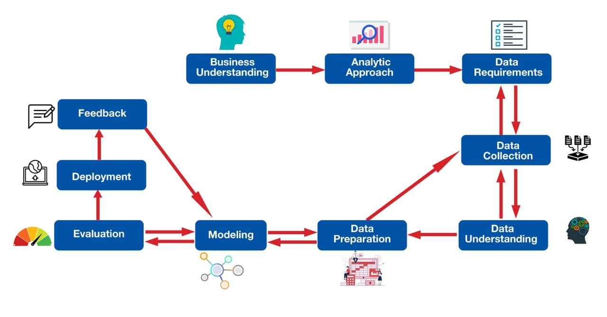

Yong Zong Wei's
Data Science Portfolio
About me.
Welcome to my profile!
Here is my data scientist research and study.
Methodology.
Particularly, the Data Science Methodology is adopted for all of my data science projects.
Why so, you may ask? Well, the Data Science Methodology detailed a pragmatic approach for the entirety of a data science project.
Also, at every stage of the methodology, the tuning process can be repeated until a satisfactory condition is met.
The Data Science Methodology shown at below:

- Business Understanding: Trying to understand what the problem is, and what you are trying to solve.
- Analytic Approach: Selecting the right analytic approach (machine learning algorithm) depends on the main problem and objective.
- Data Requirements: Listing down the necessary data content, the formats of the data.
- Data Collection: Data scientist takes place to determine whether or not they have what they need.
- Data Understanding: Study the dataset, read the dataset, looking at the number of rows and columns.
- Data Preparation: In this stage Data Scientist will focus on Data Wrangling, and Exploratory Data Analysis.
- Modelling: Applying the chosen analytic approach.
- Evaluation: Checking the results.
- Deployment: Trying to apply the model on the new coming data.
- Feedback : Getting comments.
Project.
Credit Card Fraud Detection

- Business Understanding:
Base on some data search from U.S. Federal Trade Commission (FTC) resource, credit card fraud was the second top in FTC that most reported in 2019. A total of 53,763 credit card frauds were reported with a total loss of $135M.
In April 2020, early in the pandemic, The Wall Street Journal reported that fraud losses – including losses linked to credit and debit cards – cost banks, merchants, and in some cases, cardholders $16.9 billion in 2019, according to Javelin Research. Note the dramatically higher number here; $16.9 billion is more than 125 times greater than the $135 million, credit card-only figure from the Sentinel report.
Main Problem:- Enormous credit card transactions are processed every day. Out of that, only less than 2% of transactions are fraudulent, which are need to sort out.
- The scammers always used adaptive techniques.
- There are some unclassified data because many of the fraudulent transactions are not reported or caught.
- Fraudulent detection model has to be the fastest possible process and most accurate.
Objective: Improve the credit card fraud detection with 99% accuracy. - Exploratory data analysis:
- Machine learning model: Decision Tree
Contact.
Connect with me!